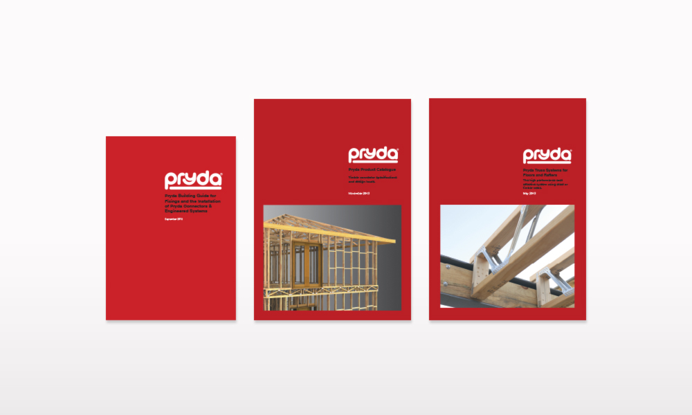

bhavya daiya
-

Publications
-
Collateral #1
pryda new zealand
collaterals made:
product catalogue, technical literature, promo content
Pryda is one of New Zealand's leading timber truss and frame solutions creator. They create timber connectors and structural brackets and their products can be found in major trade stores and in the offices of architects, engineers and designers.
With Pryda, I designed 6 of their publications that were intended for consumer and architectural reference. This includes their biggest, Product Catalogue.